측량및지형공간정보기사 (2004-05-23 기출문제)
1과목: 측지학 및 위성측위시스템
1. 다음 중 물리학적 측지학에 속하지 않는 것은?
- 지구의 형상 및 크기 결정
- 중력측정
- 시각의 결정
- 지각변동조사
(정답률: 94%)

2. 지오이드에 대한 다음 설명 중 틀린 것은?
- 평균해수면을 육지까지 연장하여 지구를 덮는 곡면을 상상하여 이 곡면이 이루는 모양을 지오이드라 한다.
- 지오이드면은 등포텐셜면으로 항상 중력방향에 수직이다.
- 지오이드면은 대체로 실제 지구형상과 지구타원체사이를 지난다.
- 지오이드면은 대륙에서는 지구타원체보다 낮으며 대양에서는 지구타원체보다 높다.
(정답률: 67%)
3. 지구 타원체에 대한 설명중 틀리는 것은?
- 단축(短軸)을 중심으로 회전시킨 타원체이다.
- 기하학적 타원체이므로 굴곡이 없는 매끄러운 곡면이다.
- 지구의 부피, 표면적 등을 구할 때는 지구타원체를 기준으로 한다.
- 경위도 결정과 지도제작의 기준은 지오이드면을 사용한다.
(정답률: 59%)
4. 지각균형(Isostasy)이론과 관련된 설명으로 옳은 것은?
- 지형의 요철(凹凸)에 관계없이 지각은 지하구조에 대하여 일정한 압력을 준다.
- 지각은 정역학적으로 평형을 이루기 위하여 지각의 변동이 발생한다.
- 지표면의 凹부분은 지각 지하구조의 질량이 부족한 반면, 凸부분에서는 질량의 여분이 있다.
- 지각 균형이론은 소규모의 지각구조에 대하여 잘 성립한다.
(정답률: 82%)
5. 평균 해수면(지오이드면)으로부터 어느 지점까지의 연직거리는?
- 정표고(Orthometric height)
- 역표고(Dynamic height)
- 타원체고(Ellipsoidal height)
- 지오이드고(Geoid undulation)
(정답률: 59%)
6. UTM 좌표에서 횡대의 간격은 남북위 80° 까지 몇 도 간격으로 나누어져 있는가?
- 6°
- 8°
- 10°
- 12°
(정답률: 80%)
7. 삼각수준측량에 있어서 정밀도를 1/30,000로 제한하면 지구 곡율과 대기굴절을 고려하지 않아도 되는 시준거리는 약 몇 m 이내인가? (단, 지구곡율반경은 6370km, 광선의 굴절계수는 0.13임)
- 22m
- 244m
- 488m
- 699m
(정답률: 67%)
8. 중력값이 지구상의 지점에 따라 차이가 나는 원인이나 현상에 대한 설명으로 틀린 것은?
- 위도에 따라 지구의 인력이 다르다.
- 관측점 지하의 밀도가 크면 중력이 크다.
- 위도에 따라 원심력이 다르다.
- 높은 산위의 관측점에서는 중력이 크다.
(정답률: 73%)
9. 중력이상에 관한 설명으로 옳지 않은 것은?
- 중력이상이란 보정된 기준면의 중력값과 표준중력의 차를 나타낸다.
- 중력이상의 주된 원인은 지하의 밀도가 고르게 분포되어 있지 않기 때문이다.
- 밀도가 큰 물질이 지표면 가까이 있을 때는 음(-)값을 갖는다.
- 중력이상을 해석함으로써 지하 구조나 지하 광물체의 탐사에 이용된다.
(정답률: 86%)
10. 관측자의 연직선이 천구와 만나는 점은?
- 천정
- 천북극
- 천저
- 춘분점
(정답률: 72%)
11. 천체를 포함하는 천구는 지구의 자전 때문에 하루에 한번씩 동쪽에서 서쪽으로 회전하는 것 처럼 보이는데 이것을 천구의 무슨 운동이라 하는가?
- 일주운동
- 일간운동
- 일방운동
- 일시운동
(정답률: 93%)
12. 위성측량에서 위성의 궤도와 임의 시각의 궤도상의 위치를 결정할 수 있는 위성의 궤도요소가 아닌 것은?
- 궤도의 장반경
- 승교점(ascending node)의 적위
- 궤도 경사각
- 궤도 주기
(정답률: 91%)
13. 다음 중 지구의 자기장 변화에 영향을 주지 않는 것은?
- 부게이상
- 영년변화
- 일변화
- 자기폭풍
(정답률: 92%)
14. 지자기의 3요소에 대한 설명으로 옳지 않은 것은?
- 자기장의 수평분력은 진북방향성분과 동서방향성분으로 나눌 수 있다.
- 지자기의 3요소는 복각, 편각, 수평분력이다.
- 편각은 수평분력과 진북이 이루는 각이다.
- 복각은 전자장과 연직분력이 이루는 각이다.
(정답률: 54%)
15. 다음 설명중 옳지 않은 것은?
- 천문위도란 지오이드의 법선을 기준으로 한 것이다.
- 일반적으로 지심위도는 측지위도보다 작은 값을 갖는다.
- 측지위도란 준거타원체의 법선이 적도면과 이루는 각이다.
- 일반적으로 천문위도와 측지위도는 일치한다.
(정답률: 17%)
16. 삼각측량을 이용한 지각변동해석에 관한 설명으로 맞지 않는 것은?
- 삼각측량에 의한 지각의 수평변동을 해석하는 경우에 문제점은 부동점의 가정에 있다.
- 대지진에 의한 지각의 국지적 변동을 아는 경우에는 삼각점의 변위벡터가 효과적이다.
- 지각의 수평변동은 변위벡터 외에 지각의 탄성파 성분을 가지고 표시할 수 있다.
- 지각의 수직변동은 좁은 지역의 측량을 통해 검출하는 것이 효과적이다.
(정답률: 6%)
17. 지상에서 중력측정을 할 때 측정결과를 보정할 사항이 아닌 것은?
- 고도 보정
- 지형 보정
- 아이소스타시 보정
- 외토뵈쉬 보정
(정답률: 90%)
18. 우리나라에서 해안선을 결정하기 위하여 채택하고 있는 기준면은?
- 평균해수면
- 평균최고만조면
- 평균최저만조면
- 지오이드면
(정답률: 79%)
19. 측지선에 대한 정의로서 적합치 않은 것은?
- 지표면상 두 점을 잇는 최단거리가 되는 곡선을 측지선이라 한다.
- 평면곡선과 측지선의 길이의 차는 극히 미소하여 무시 할 수 있다.
- 측지선은 미분기하학으로 구할 수 있으나 직접 관측하여 구하는 것이 더욱 정확하다.
- 측지선은 두 개의 평면곡선의 교각을 2:1로 분할하는 성질이 있다.
(정답률: 79%)
20. 다음 중 연직선에 직교하는 모든 점을 잇는 곡면으로서 국지측량에서 보통 평면으로 간주하는 것은?
- 수직면
- 수평면
- 수준면
- 기준면
(정답률: 91%)
2과목: 응용측량
21. 다음 중 경관구성요소에 의한 분류(시점과 대상과의 관계에 의한 분류)에 속하지 않는 것은?
- 대상계(對象系)
- 경관장계(景觀場系)
- 상호성계(相互性系)
- 인공계(人工系)
(정답률: 70%)
22. 갱내 A, B의 좌표 A(x=1328.0m, y=810.0m, z=86.30m), B(x=1734.0m, y=589.0m, z=112.40m)되는 두 점을 굴진하는 경우 A, B점의 경사각은?
- 약 3°
- 약 5°
- 약 7°
- 약 9°
(정답률: 59%)
23. 그림과 같은 2중 부자를 이용하여 유속을 관측하고자 한다. 평균유속을 직접 관측하기 위해서 수면에 있는 부자와 수중에 있는 부자간의 간격(ℓ)으로 적당한 길이는?
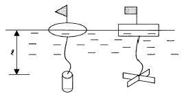
- 수심의 20% 깊이
- 수심의 40% 깊이
- 수심의 50% 깊이
- 수심의 60% 깊이
(정답률: 75%)
24. 노선측량에서 곡률반경 R=50m인 단곡선을 설치할 때 장현C의 값은? (단, AB 방위=N 25° 33'00" E, BC 방위=S 28° 22'00" E)
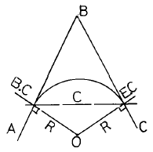
- 90.66m
- 89.13m
- 87.99m
- 80.82m
(정답률: 55%)
25. 수위관측소의 설치 장소로서 적합치 못한 것은?
- 상, 하류 최소 100m 정도 곡선인 장소
- 수위가 교각 및 그 밖의 구조물로 영향을 받지 않는 곳
- 홍수시 유실 또는 이동의 염려가 없는 곳
- 평상시는 물론 홍수시에도 쉽게 양수표를 읽을 수 있는 장소일 것
(정답률: 64%)
26. 그림과 같은 토지의 변길이와 내각을 관측하였을 때 사변형 ABCD의 면적은 얼마인가?
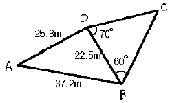
- 약 526m2
- 약 538m2
- 약 547m2
- 약 557m2
(정답률: 54%)
27. 그림과 같이 터널 단면의 좌표(x, y)를 측정하였을 때 터널의 내공단면적은?
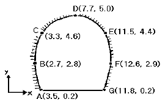
- 41.12m2
- 45.25m2
- 82.23m2
- 90.50m2
(정답률: 62%)
28. 경관측량에서 인식대상의 주체에 의한 분류에 해당되지 않는 것은?
- 인공경관
- 생태경관
- 환경경관
- 자연경관
(정답률: 70%)
29. △ABC에서 선DE를 BC에 평행하게 그어 △ADE와 □ DBCE의 넓이를 같게 하고자 할 때 DE의 길이는?
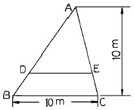
- 7.07m
- 6.98m
- 6.67m
- 5.00m
(정답률: 43%)
30. 하천측량에서 유속을 측정하였더니 하저로부터 깊이(H)의 0.8H, 0.6H, 0.2H인 곳의 유속이 각 각 0.584m/sec, 0.624m/sec, 0.240m/sec로 관측되었다. 평균유속은?
- 0.438m/sec
- 0.518m/sec
- 0.654m/sec
- 0.704m/sec
(정답률: 9%)
31. 두 직선의 교각이 80° , 외할(E)이 25m 인 두 직선사이에 곡선을 설치하고자 한다. 이 때 반경 R은 얼마인가?
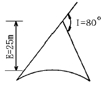
- 51.86m
- 61.86m
- 71.86m
- 81.86m
(정답률: 50%)
32. 도상에서 노선 선정시 고려사항에 속하지 않는 것은?
- 절토의 운반거리가 짧게 될 것
- 배수가 완전할 것
- 가능한 경사가 완만할 것
- 가능한 곡선으로 할 것
(정답률: 70%)
33. 지하시설물 측량의 대상이 아닌 것은?
- 상수도
- 가스관
- 도시기준점
- 하수도
(정답률: 58%)
34. 터널측량에 관한 설명으로 맞는 것은?
- 터널측량을 크게 나누어 갱외측량, 갱내측량, 갱내외 연결측량으로 구분한다.
- 갱내에서 중심말뚝을 콘크리트 등을 이용하여 견고하게 만든 것을 자이로(gyro)라고 한다.
- 터널측량의 순서는 갱내측량, 갱내외연결측량, 갱외측량의 순서로 행한다.
- 갱내의 측량에는 기계의 십자선과 표척 등에 조명이 필요하지 않다.
(정답률: 25%)
35. 넓은 지역의 정지나 매립과 같은 경우의 토공량 산정 시 많이 이용하는 방법으로, 대상지역을 일정한 크기의 삼각형 또는 사각형으로 구분하여 각 꼭지점 지반고에서 계획고 사이의 높이차를 구하여 체적을 구하는 방법은?
- 양단면 평균법
- 등고선법
- 점고법
- 중앙단면법
(정답률: 70%)
36. 반경(R)이 200m, 교각(I)이 56° 20'인 원곡선 위의 한 점에 대해서 편각(δ)이 7° 25'일 때 이 점의 좌표는? (단, 시점을 원점(0,0), 시점에서 곡선중심으로의 방향을 x축, 시점에서 교점으로의 방향을 y축으로 가정함.)
- x = 51.20m, y = 6.67m
- x = 31.63m, y = 2.52m
- x = 6.67m, y = 51.20m
- x = 2.52m, y = 31.63m
(정답률: 62%)
37. 그림과 같은 포물선으로 둘러쌓인 부분의 면적을 구하는 식으로 옳은 것은?
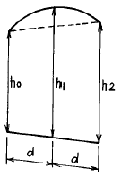
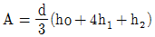
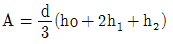
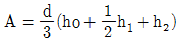
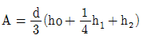
(정답률: 73%)
38. 접선길이가 40m, 교각(交角)이 60° 일 때 원곡선의 곡선장은 얼마인가?
- 72.54m
- 59.86m
- 45.22m
- 38.⑤m
(정답률: 20%)
39. 사갱의 고저차를 구하기 위해 측량을 하여 A점의 기계고=1.55m, B점의 시준고=1.89m, 사거리=42.77m, 연직각=+21°10′의 결과를 얻었다. A, B의 고저차는? (단, A점의 기계고와 B점의 시준고는 천상(天上)으로부터 측정한 값이다.)
- 11.75m
- 13.58m
- 15.78m
- 17.55m
(정답률: 28%)
40. 면적산정법을 산정방법에 따라 크게 수치계산법과 도해법으로 구분할 때 수치계산법에 해당되지 않는 것은?
- 삼사법
- 단면법
- 방안법
- 좌표법
(정답률: 19%)
3과목: 사진측량 및 원격탐사
41. 초점거리 150mm 카메라로 비고 300m 지점을 촬영한 결과 축척이 1/10,000 이었다면 연직사진의 촬영고도는?
- 1,000m
- 1,500m
- 1,800m
- 2,000m
(정답률: 20%)
42. 촬영고도 H=6,350m, 사진 I의 주점기선장(主點基線長) b1=67mm, 사진 II의 주점기선장 b2=70mm 이고, 시차차(視差差) △p=1.37mm 일 때 산정(山頂)의 비고(比高)는?
- 107m
- 117m
- 127m
- 137m
(정답률: 알수없음)
43. 도화시 입체도화기의 건판지지기(photo-carrier)에 부착하는 사진 재료는?
- 음화필름
- 밀착양화필름
- 밀착인화사진
- 확대인화사진
(정답률: 75%)
44. 상호표정 인자로 옳게 짝지어진 것은?
- bx, by, bz, k, Ψ 이다.
- by, bz, k, ω , Ψ 이다.
- bx, by, bz, λ , Ψ 이다.
- k, λ , Ψ , bx, bz 이다.
(정답률: 72%)
45. 지상사진측량에서 양사진기의 촬영축을 촬영기선에 대하여 어느 각도만큼 내측으로 향해 촬영하는 방법으로 높은 정확도를 얻을 수 있는 촬영방법은?
- 직각수평촬영법
- 직각경사촬영법
- 편각수평촬영법
- 수렴수평촬영법
(정답률: 73%)
46. 초점거리가 150mm인 카메라로 비행고도 6,000m에서 촬영한 엄밀수직 항공사진이 있다. 종중복도(overlap)가 60%일 때 한 모델의 실제면적은? (단, 23cm× 23cm의 광각 사진이다.)
- 9.66km2
- 33.86km2
- 15.46km2
- 18.56km2
(정답률: 17%)
47. 항공사진의 특수 3점을 나열한 것으로 옳은 것은?
- 연직점, 등각점, 소실점
- 주점, 소실점, 연직점
- 등각점, 주점, 소실점
- 주점, 연직점, 등각점
(정답률: 70%)
48. 항공사진과 지도의 투영에 대한 설명으로 옳은 것은?
- 항공사진은 중심투영, 지도는 정사투영이다.
- 항공사진은 정사투영, 지도는 중심투영이다.
- 항공사진이 등적투영, 지도는 평행투영이다
- 항공사진이 평행투영, 지도는 등적투영이다.
(정답률: 65%)
49. 불규칙삼각망(TIN:Triangulated Irregular Network)에 대한 설명으로 옳지 않은 것은?
- TIN은 불규칙한 3차원 점들을 삼각형으로 연결하여 지형을 표현한 것이다.
- 수치지도의 등고선 자료로부터 TIN을 만들 수 있다.
- 밝기값으로 고도를 표현하는 수치모형이다.
- TIN은 벡터구조로서 위상관계를 갖는다.
(정답률: 80%)
50. 상호표정을 옳게 설명한 것은?
- 횡시차를 소거하여 사진의 주점을 투영기의 중심에 맞추는 작업이다.
- 입체모델을 지상좌표계와 일치시키는 것이다.
- 종시차 Py를 소거하여 한 모델이 완전 입체시가 되게하는 작업이다.
- 대기굴절, 지구곡률, 렌즈수차 등을 보정하는 작업이다.
(정답률: 70%)
51. 사진측량에서의 모델(Model)에 대한 정의로 가장 알맞은 것은?
- 한쌍의 중복된 사진으로 입체시되는 부분이다.
- 어느 지역을 대표할 만한 사진이다.
- 편위수정(偏位修正)을 한 사진이다.
- 한장의 사진이다.
(정답률: 82%)
52. 동일한 구역을 같은 사진기를 이용하여 촬영할 때 비행고도를 2배 높이면 전체 사진매수는 몇 배로 줄어들게 되는가?
- 1/3
- 1/4
- 1/8
- 1/10
(정답률: 82%)
53. 주점에 대한 설명으로 올바른 것은?
- 카메라 렌즈의 중심을 통한 지표면에 내린 연직선이 만나는 점
- 사진의 중심점으로서 렌즈의 중심으로부터 사진면에 내린 수선과 만나는 점
- 사진면에 직교되는 광선과 연직선이 이루는 각을 2등분하는 광선이 사진면에 마주치는 점
- 렌즈의 중심으로부터 지표면에 대린 수선의 발
(정답률: 58%)
54. 화면크기 23cm×23cm의 항공카메라로 축척 1/10,000 횡중복 30%의 공중사진을 촬영하였다. 코스간격은 축척 1/50,000인 지형도 상에서는 몇 cm인가?
- 1.38cm
- 2.10cm
- 3.22cm
- 6.90cm
(정답률: 47%)
55. 표정(orientation)의 순서가 올바르게 된 것은? (단, 대지표정은 절대표정이라고도 함.)
- 내부표정→ 상호표정→ 접합표정→ 대지표정
- 상호표정→ 대지표정→ 접합표정→ 내부표정
- 내부표정→ 대지표정→ 상호표정→ 접합표정
- 상호표정→ 내부표정→ 접합표정→ 대지표정
(정답률: 77%)
56. 편위수정에 대한 설명으로 옳은 것은?
- 경사 및 축척의 수정
- 기복변위의 수정
- 시차의 수정
- 비고의 수정
(정답률: 28%)
57. 평탄지의 축척 1/20,000 항공사진을 편위수정하여 축척 1/5,000의 연직사진을 제작하였다. 이 연직사진에 찍힌 직육면체 빌딩의 벽상변(屋上의 邊) 및 하변(底面의 邊)의 길이는 사진 상에서 각각 20.0㎜ 및 19.8㎜ 이었면이 빌딩의 높이는? (단, 항공 카메라의 초점거리는 15㎝이고, 벽 상변과 하면의 실제 길이는 같다.)
- 15m
- 20m
- 25m
- 30m
(정답률: 16%)
58. 사진측량의 장점에 대한 설명으로 틀리는 것은?
- 정량적(定量的)및 정성적(定性的) 측량이 가능하다.
- 동체(動體)관측 및 분석이 가능하다.
- 실내 작업이 많아 정확도의 균일성 좋다.
- 소규모 지역의 측량에 경제적이다.
(정답률: 59%)
59. 축척 1/20,000의 항공사진을 시속 180km/h로 촬영할 경우에 허용 흔들림을 사진상에서 0.02mm로 한다면 최장 노출시간은?
- 1/100초
- 1/125초
- 1/150초
- 1/175초
(정답률: 37%)
60. 촬영스트립의 길이가 4km라고 하면 몇 매의 사진을 촬영해야 하는가? (단, 사진축척 1/10000, 종중복도 60%, 사진크기 21cm× 21cm)
- 4매
- 5매
- 6매
- 7매
(정답률: 17%)
4과목: 지리정보시스템
61. 지형 및 표고라고도 하는 자연조건에 토지의 이용, 소유가치까지 포함시켜 토지의 이용, 개발 등을 위한 정보분석체계는?
- 토지정보체계
- 교통정보체계
- 재해관리체계
- 시설물관리체계
(정답률: 67%)
62. 다음 그림과 같은 수준측량에서 P점의 표고는?
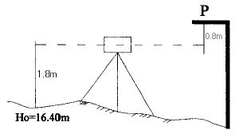
- 17.4m
- 18.00m
- 18.40m
- 19.00m
(정답률: 64%)
63. 50m 테이프로 어떤 거리를 측정한 결과 175m 이었다. 이 50m 테이프는 표준척 보다 3cm 가 짧다고 할 때 이 테이프로 측정한 실제의 거리는?
- 174.895m
- 175.1⑤m
- 173.950m
- 176.256m
(정답률: 31%)
64. 경관정보에 관한 설명 중 옳지 않은 것은?
- 풍경, 경색은 환경을 감성적으로 보는 것이다.
- 경관은 환경을 시각적으로 보는 것이며 개선 가능한것이다.
- 풍경, 경색은 객관적이며 경관은 주관적이다.
- 경관은 바라보는 행위를 포함한다.
(정답률: 54%)
65. 등고선의 기입방법이 아닌 것은?
- 투사척도에 의한 기입방법
- 작도에 의한 기입방법
- 계산에 의한 기입방법
- 지적도에 의한 기입방법
(정답률: 67%)
66. 지형의 표시방법 중 부호적 도법에 속하지 않은 것은?
- 음영법(SHADING SYSTEM)
- 단채법(LAYER SYSTEM)
- 점고법(SPOT SYSTEM)
- 등고선법(CONTOUR SYSTEM)
(정답률: 16%)
67. 그림과 같은 트래버스에서 A점의 좌표가 XA=69.30m, YA=123.56m, B점의 좌표가 XB=153.47m, YB=636.22m, AB간위거의 총합이 +84.30m, 경거의 총합이 +512.60m일 때 폐합오차는?
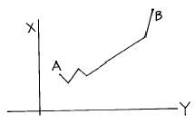
- 0.14m
- 0.24m
- 0.34m
- 0.44m
(정답률: 50%)
68. A점이 좌표의 종축에 접하는 폐합트래버스측량에 있어서 다음과 같은 측량결과를 얻었다면 측선 CD의 배횡거는?
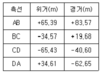
- 83.57m
- 115.90m
- 165.90m
- 186.82m
(정답률: 55%)
69. 축척 1/25,000의 지형측량에서 측점의 높이오차가 2.5m일 때 그 측점을 지나는 도상 등고선의 오차는? (단, 지점의 경사각은 1° )
- 약 4mm
- 약 6mm
- 약 10mm
- 약 15mm
(정답률: 28%)
70. 다음의 오차중 그 원인이 불명하고, 아무리 주의하여도 제거할 수 없는 오차는?
- 우연오차
- 정오차
- 확률오차
- 허용오차
(정답률: 70%)
71. 평판측량에서 발생하는 도상오차 중 도상 방향선의 길이에 의해 영향을 받지 않는 오차는?
- 자침오차
- 정준오차
- 구심오차
- 시준오차
(정답률: 50%)
72. 합수선이라고도 하며 지표가 낮거나 움푹 패인 점을 연결한 선은?
- 계곡선
- 산령선
- 경사변환선
- 경사선
(정답률: 73%)
73. 다음 도형의 면적은 얼마인가?
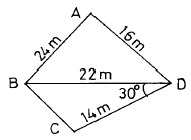
- 258.16m2
- 248.16m2
- 238.16m2
- 228.16m2
(정답률: 50%)
74. 동일한 정밀도로 각을 관측하여 α = 39° 19′ 40″ , β =52° 25′ 29″ , γ = 91° 45′ 00″ 를 얻었다. 최소제곱법으로 γ 의 최확치(
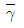
)를 구하라.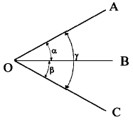
- 91° 44′ 57″
- 91° 44′ 59″
- 91° 45′ 01″
- 91° 45′ 03″
(정답률: 0%)
75. 지표면에 존재하는 각각의 주제가 지닌 실제 면적에 비례하여 지도상에 각각의 주제에 관한 면적을 배분하는 투영법은?
- 등적투영법
- 등거리투영법
- 등각투영법
- 원뿔투영법
(정답률: 59%)
76. 평판측량시 축척 1/600일 때 도면작성시 도상 0.3mm 오차 허용시 구심오차의 허용범위는?
- 9cm 이내
- 12cm 이내
- 15cm 이내
- 18cm 이내
(정답률: 62%)
77. 특별기준면에 대한 설명으로 옳은 것은?
- 섬이나 하천에서 사용하기 위해 따로 만든 기준면
- 특별히 높은정도의 측량으로 만든 기준면
- 서울특별시 건설에 사용되는 기준면
- 우리나라 5개 수준면중 대표가 되는 기준면
(정답률: 70%)
78. 지형공간정보체계(GSIS)에 대한 특징으로 옳은 것은?
- 위치정보와 속성정보를 분리하여 저장관리 하므로 시스템 운영이 비효율적이다.
- 점, 선, 면으로 표시되는 공간적 정보를 다양한 목적과 형태로 분석, 처리할 수 있는 시스템이다.
- 위성영상자료나 센서스조사자료로는 사용할 수 없다.
- 중복분석이나 통계분석이 어려워 의사결정수단으로 이용될 수 없다.
(정답률: 37%)
79. 평판으로 세부측량을 실시할 때 일반적으로 소지역이며 시계가 좋을 경우에 가장 능률적인 방법은?
- 전진법
- 전방교회법
- 방사법
- 후방교회법
(정답률: 54%)
80. A점 표고가 135m, B점 표고가 113m인 두점에 10m 간격의 등고선을 삽입할 때 130m 등고선이 지나는 위치는 B점으로부터 수평거리가 얼마나 떨어져 있는가? (단, AB의 수평거리 250m이다.)
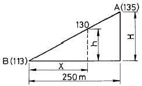
- 150.4m
- 170.5m
- 193.2m
- 203.9m
(정답률: 67%)
5과목: 측량학
81. 측량표의 이전(移轉)에 관한 신청의 접수는 누가하는가?
- 건설교통부장관이 접수한다.
- 도지사 또는 시장, 군수가 접수한다.
- 국토지리정보원장이 접수한다.
- 관할 경찰서장이 접수한다.
(정답률: 54%)
82. 수치 지형도의 보완은 몇 년에 1회 이상 주기적으로 하는가?
- 1년
- 2년
- 3년
- 4년
(정답률: 60%)
83. 공공측량과 기본측량에서 측량 기준에 해당되지 않는 것은?
- 평균해면으로부터의 높이
- 지리학적 경위도
- 직각좌표 및 극좌표
- 수평곡면상의 평균값
(정답률: 39%)
84. 측량표 중 일시 표지에 표시할 내용으로 옳지 않은 것은?
- 명칭
- 설치자 성명
- 관리자 성명
- 측량표의 형상
(정답률: 67%)
85. 측량심의회의 심의사항이 아닌 것은?
- 측량기술자의 품위보전
- 측량도서의 발간
- 기본측량에 관한 계획의 수립 및 실시
- 측량기술의 연구·발전
(정답률: 50%)
86. 기본측량이나 공공측량의 실시 공고를 하는 자는?
- 건설교통부장관
- 시·도지사
- 국토지리정보원장
- 측량계획기관
(정답률: 40%)
87. 다음 사항중 지도도식규칙에 정의된 용어 및 적용범위에 대한 설명으로 옳은 것은?
- "지도"라 함은 지구상의 특정 지형 및 지세를 총람하기 편리하게 지모 및 지물을 일정한 기호와 축척으로 표시한 도면이다.
- "도식"이라 함은 지도에 표기하는 지형· 지물 및 지명 등을 나타내는 상징적인 기호나 문자 등의 크기·모양· 색상 및 그 배열방식 등을 말한다.
- 일반측량의 성과로서 지도를 간행하는 경우에도 적용된다.
- 군사용의 지도와 그 간행물에 대하여도 반드시 적용하여야 한다.
(정답률: 58%)
88. 국토지리정보원장이 간행하는 지도의 축척이 아닌 것은?
- 1/25,000
- 1/2,500
- 1/1,500
- 1/1,000
(정답률: 70%)
89. 건설교통부장관, 국토지리정보원장의 권한을 대한측량협회에 위탁한 업무는？
- 공공측량성과심사 및 지도 등의 심사
- 측량기술자 중 측량기능사의 경력증 발급
- 공공측량성과의 고시
- 공공측량의 측량기록 사본의 제출요구
(정답률: 64%)
90. 세계측지계의 요건으로 잘못된 것은？
- 회전타원체의 편평율은 299.152813 분의 1
- 회전타원체의 장반경은 6,378,137미터
- 회전타원체의 중심은 지구의 질량중심과 일치할 것
- 회전타원체의 단축이 지구의 자전축과 일치할 것
(정답률: 39%)
91. 측량업자가 고의 또는 과실로 인하여 측량을 부정확하게 한 경우에 받을 수 있는 영업정지 처분의 기간은 최대 몇 개월 인가?
- 1개월
- 3개월
- 6개월
- 12개월
(정답률: 70%)
92. 일반측량은 무엇을 기초로하여 실시하는 것을 원칙으로 하는가?
- 기본측량의 측량성과와 측량기록만으로 한다.
- 공공측량의 측량성과와 측량기록만으로 한다.
- 기본측량 또는 공공측량의 측량성과와 측량기록을 기초로 한다.
- 공공측량 또는 일반측량의 측량성과와 측량기록을 기초로 한다.
(정답률: 69%)
93. 다음 공공측량의 작업순서로 맞는 것은？
- 작업규정작성→작업실시→작업규정승인→성과심사→성과고시
- 작업규정작성→작업규정승인→작업실시→성과심사→성과고시
- 작업실시→작업규정작성→작업규정승인→성과심사→성과고시
- 작업규정작성→작업실시→작업규정승인→성과고시→성과심사
(정답률: 알수없음)
94. 등고선에 의하여 표현되는 것은 어느 것인가?
- 지물
- 지류
- 지모
- 지상
(정답률: 59%)
95. 측량업 등록의 결격사유를 설명한 내용 중 옳지 않은 것은?
- 파산자로서 복권되지 아니한 자
- 금치산 또는 한정치산의 선고를 받은 자
- 측량법을 위반하여 금고이상의 형의 선고를 받고 형의 집행유예 기간중에 있는 자
- 국가 보안법의 죄를 범하여 금고이상의 형의 선고를 받고 그 집행을 받지 아니하기로 확정된 후 3년이 경과되지 않은 자
(정답률: 62%)
96. 다음 중 정당한 사유없이 측량의 실시를 방해한 자는 어떤 조치를 받는가?
- 2년이하의 징역 또는 500만원이하의 벌금에 처한다.
- 200만원이하의 과태료에 처한다.
- 100만원이하의 과태료에 처한다.
- 1년이하의 징역 또는 300만원이하의 벌금에 처한다.
(정답률: 67%)
97. 다음 중 기본측량으로 발생한 손실 보상의 재결기관은?
- 관할토지수용위원회
- 고등법원
- 대법원
- 국토지리정보원
(정답률: 67%)
98. 국토지리정보원장의 허가없이 지도를 해외로 반출할 수 있는 경우중 옳지 않은 것은?
- 정부를 대표하여 국제회의 또는 국제기구에 참석하는 자가 자료로 사용할 경우
- 1:5,000미만의 소축척도를 반출하는 경우
- 외국정부와의 체결된 협정 또는 합의에 의하여 상호 교환하는 경우
- 관광객의 유치와 관광시설의 선전을 목적으로 제작하여 반출하는 경우
(정답률: 70%)
99. 다음 설명 중 틀린 것은?
- 측량표는 영구표지, 일시표지, 임시설치표지로 나뉘며, 영구표지에 위성측지기준점표지가 포함된다.
- 기본측량은 모든측량의 기초가 되는 측량으로서 건설교통부장관의 명을 받아 국토지리정보원장이 실시하는 것을 말한다.
- 기본측량은 측량의 기초가 되는 국가기준점측량, 연안해역의 측량과 국가지형도제작 등을 포함하나, 측량용 사진의 촬영, 도화 등은 제외한다.
- 공공측량은 공공의 이해에 관계가 있는 측량으로서 기본측량외의 측량중 국가, 지방자치단체 등이 실시하는 측량을 말한다.
(정답률: 73%)
100. 공공측량에 준하는 측량은 어느 것인가?
- 국토지리정보원에서 시행하는 측량으로서 모든 측량의 기초가 되는 측량
- 지적법에 의한 지적측량
- 10,000m2 범위의 지형측량
- 국토지리정보원장이 발행하는 지도의 축척과 동일한 축척의 지도제작
(정답률: 30%)